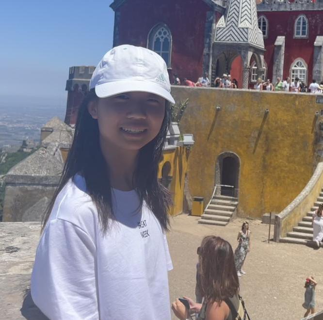

info BCA Math Team
The Bergen County Academies Math Team is one of the strongest math teams in the nation (check Past Results in the News page). The team participates in many math competitions during the year, both locally and across the globe.
The Math Team is open to all middle and high school students, regardless of mathematical ability. For students in high school (and some advanced middle schoolers), the Saturday Math Team meets at BCA every Saturday for three hours (1-4 PM). These meetings will consist of a combination of lectures, actual competitions and practice competitions. Recordings of previous lectures can be found at the archive page.
We are also responsible for organizing and running the Joe Holbrook Memorial Math Competition, the largest middle school math competition in Bergen County. For more information, please visit its official website at https://holbrook.bcamathteam.org.
group Math Team Leadership (2024-25)
|
Andrea Chen
andche25@bergen.org  |
Hello! I'm Andrea, a senior in AAST, and I've been in Math Team since middle school. It's always fun meeting people and solving cool problems together at math team. Besides math, I enjoy playing the oboe, learning computer science, and listening to music. I'm excited to meet you all! |
|
Anthony Kim
antkim25@bergen.org |
Hihi! I'm Anthony, and you can call me Tony. I'm a senior in ATCS and I've been to Math Team first in middle school. My favorite subjects in math are number theory and algebra. I enjoy math, computer science, and I like playing guitar and video games like Celeste! Excited to meet all of you and hope you enjoy! |
|
Daniel Gilman
dangil25@bergen.org |
Hello, I'm Daniel! I am a senior in AAST, and I have been doing competitive math since elementary school. I first joined BCA Math Team in 8th grade, and love working on problems and learning new topics with others. Apart from Math Team, I also enjoy robotics, coding, and badminton. I'm looking forward to meeting everyone at Math Team this year! |
|
Jeremy Lee
jerlee25@bergen.org |
Hi! My name is Jeremy and I'm a senior in ATCS. I've been a part of BCA Math Team since I was a freshman and have enjoyed both learning about and solving clever math problems as well as getting to know a bunch of amazing people! Though I've always liked math, Math Team has helped me explore an entirely new side of math that I hadn't known about before. See you soon! |
|
Maxwell Gong
maxgong25@bergen.org 
|
Hi! I'm a senior in ATCS and I've been with BCA Math Team since freshman year. Out of all the math subjects, I like geometry the most. Besides math, I like software development and word puzzles! Math Team is an inclusive place with lots of chances to meet new friends and work with them. I look forward to meeting you here! |
|
Arnav Adepu
arnade26@bergen.org |
Hello! I'm Arnav, a junior in AMST and attended the BCA Math Team for a few years now. I enjoy working on problems with others and spending countless hours on them. Personally, some of my favourite topics in math are algebra and olympiad number theory. Outside of math, I like to travel and hang out with friends. I look forward to seeing everyone this year! |
|
Gabriele Herr
gabher26@bergen.org |
Hi! My name is Gabriele, a junior in AAST. I first joined math team in freshman year and I started to love the beauty of clever observations in competition math. My favorite math competition related activity is group solving IMO problems! Outside of math, I enjoy physics, coding competitions, violin, and volleyball. I'm excited to see everyone learn cool math this year! |
|
Michael Middlezong
micmid26@bergen.org |
Hi! I'm Michael, a junior in AAST. I first joined Math Team in freshman year, and over the years, it has been really fun to do math with other people. I love exploring different topics in math, and some of my favorites are olympiad geometry (not computational) and combinatorics! Besides math, I love a variety of music and also play the piano myself. I hope to spread my passion for learning math at Math Team this year! |
| Michael Abramson (micabra@bergen.org) | Dr. Abramson has been working with the Math Team since 2005. As a student of contest writer Steven Conrad, he was a top-ten finisher on the USAMO, finished second at ARML, and attended the prestigious Math Olympiad Program (MOP) twice as a student and twice as a counselor. |
| Jonathan Pinyan (jonpin@bergen.org) | Mr. Pinyan is a 2003 alumnus of the Bergen County Academies, and has taught at the school since 2013. As a member of the BCA Math Team, Mr. Pinyan competed at ARML seven times, took the USAMO five times, and earned a perfect score on the AMC-12 in 2003. After receiving a bachelor's degree from Washington University and a teaching certification from Ramapo, Mr. Pinyan returned to BCA, where he has been teaching and coaching Math Team since 2013. |
| Ian Askins | Mr. Askins is a 2009 alumnus of the Bergen County Academies. He has taught at the summer math camp and worked with the Math Team since 2014. |
| Dan Plotnick | Mr. Plotnick is a former student of Mr. Holbrook at Freeport High School on Long Island. Dan competed in the early years of ARML and NYSML, attended MOP twice as well as the Hampshire College summer program, and studied mathematics at Harvard College. |
| Joan Vieni | Mrs. Vieni has been a Math Team coach for over a decade and has been teaching in the district since 1999. Mrs. Vieni is very excited to see you all and share her love for math! |
| Keith Kaplan | Mr. Kaplan has been a coach of the Math Team since 2015 and has been teaching in the district since 2012. |
| Joe Holbrook | Joe Holbrook was the original coach of the AAST Math Team, and led it from the school's founding in 1992 until his 2010 death. He remains an inspiration to us all, and we strive to live up to his idea that Math Team is not just for the best, but that all students have something to gain from competition math, and all students are welcome at all Math Team events, whenever possible. |